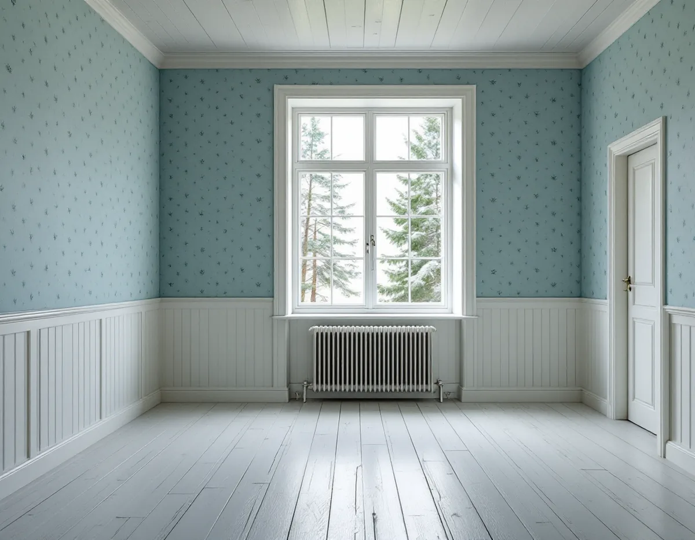
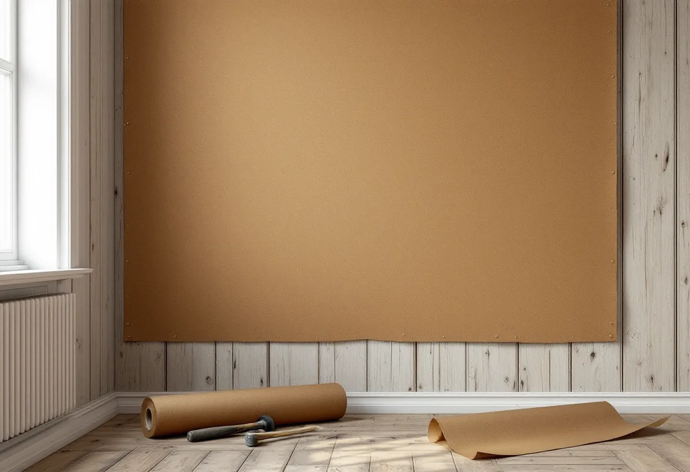

Platsbesök
Vi tittar på husets ålder, vad som sitter på väggarna och om huset värms hela året.
I en äldre villa på Lidingö kan väggarna inne vara lika viktiga för husets karaktär som fasaden. Geal Entreprenad AB tapetserar i villor, radhus och gästhus på Lidingö, och vi börjar med två frågor: är huset värdefullt, och värms det upp hela året?

Lidingö stad förklarar att arbetet med kulturmiljöprogrammet inte omfattade en inventering av varje enskild byggnad. Programmet pekar ut områden, och det finns särskilt värdefulla byggnader på ön som inte beskrivs i det. Staden har äldre inventeringar av enskilda byggnader, dels från 1970- och 1980-talen, dels från 2013–2015, och via miljö- och stadsbyggnadskontorets kundcenter kan du be att få ta del av det som finns för din fastighet.
Plan- och bygglagens förbud mot att förvanska en särskilt värdefull byggnad gäller även om ändringen inte kräver bygglov, påpekar staden. Boverket lägger till att förbudet gäller vid alla ändringar, såväl exteriört som interiört. En bevarad tapet, en målad bård eller en väggbeklädnad från husets byggtid kan alltså vara en del av det som ska tas om hand.

Staden beskriver varsamhet med några enkla råd: utgå från de karaktärsdrag och värden som just din byggnad har, underhåll befintliga material hellre än att byta, och låt det nya anpassa sig till husets stil och till vad som var typiskt när det byggdes. För en tapetsering kan det betyda att en gammal tapet lagas och får sitta kvar i ett rum, medan ett annat får nytt.
Ska det gamla bytas ut tar vi vara på en bit innan det rivs. Kulturen i Lund skriver att det går att få tag på äldre originaltapeter eller beställa handtryckta tapeter efter ett eget original. Är huset kulturhistoriskt särskilt värdefullt kan du enligt staden söka byggnadsvårdsbidrag hos länsstyrelsen.
Ön har nio byggnadsminnen, bland dem flera villor och radhusen på Canadastigen. De skyddas av kulturmiljölagen, och det är länsstyrelsen som hanterar tillstånd för förändringar av dem.
Svenska Byggnadsvårdsföreningen skriver att alla täta, vattenavvisande skikt under vissa omständigheter kan ställa till problem i gamla hus. I ett hus som i övrigt inte är diffusionstätt kan fukt som vandrar genom väggen hindras och samlas vid det täta skiktet. Om huset värms upp året runt är ett tätt skikt på insidan inget problem, men om det kallställs på vintern kan fukt anrikas bakom det.
Står ett gästhus, en sommarstuga eller ett uthus på tomten ouppvärmt delar av året väljer vi därför ytskikt som släpper igenom fukt. Föreningen nämner limfärgstapeter, lerklining och diffusionsöppna färger som alternativ till täta tapeter. I villan som värms hela året är valet friare.
I ett äldre trähus kan tapeten sitta på papp som spänts över brädor eller timmer. Byggnadsvårdsföreningen skriver att spännpapp blev ett vanligt underlag för tapeter under 1800-talet och fungerar utmärkt på panel, och att den ger en mer levande yta än gips. På spänd papp kan tapeten bilda veck i hörnen som behöver justeras efter några år.
Har pappen eller tapeten släppt i ett hörn går det att laga i stället för att byta, och därför är det klokt att spara den överblivna tapeten. Om huset utanpå behöver ny färg finns det mer under målare på Lidingö.
Vi tittar på husets ålder, vad som sitter på väggarna och om huset värms hela året.
Du tar fram inventering eller områdesbeskrivning från staden om det finns.
Lagning av gammal tapet, nedtagning och ny tapet redovisas var för sig.
Spännpapp fästs eller byts, väggar lagas och grundas där det behövs.
Tapeten sätts upp med klister som passar underlaget.
Överbliven tapet och en bit av den gamla lämnas till dig.
I ett småhus räknar Skatteverket tapetsering som rotarbete, liksom att måla väggar, tak och golv. Avdraget gäller även i bostadsrätt och ägarlägenhet.
Avdraget är 30 procent av arbetskostnaden, högst 50 000 kr per person och år och högst 75 000 kr tillsammans med rutavdrag. Material som tapet och klister ger inget avdrag, och inte heller resor. Geal drar avdraget direkt på fakturan.
Om gammal tapet ska lagas eller tas ner, om spännpappen behöver förnyas och hur många rum det gäller väger tyngst. Efter ett gratis platsbesök får du ett skriftligt kostnadsförslag.
Fasad, fönster och invändig målning.
Målare i Stockholm →Takbyte, takbesiktning och plåtarbeten.
Takläggare på Lidingö →Brevik, Mölna och Käppala.
Takrenovering på Lidingö →Värdefulla hus, kulör och bidrag.
Fasadmålning på Lidingö →Villastäderna och Brevik på Lidingö.
Fönsterbyte på Lidingö →Slipa och behandla trägolv i kök och hall.
Golvslipning på Lidingö →Plåt i vind och värdefulla miljöer.
Plåtslagare på Lidingö →Villastad, källarbadrum och gästhus.
Badrumsrenovering på Lidingö →Villastäder, radhusbyar och berg.
Byggföretag på Lidingö →Radhus, villor och putsfasader på Lidingö.
Fasadrenovering på Lidingö →Souterrängvillor, radhus och äldre villor på Lidingö.
Golvläggare på Lidingö →Villastäder, souterräng och radhusbyar.
Köksrenovering på Lidingö →Villastäder, radhusbyar och stugor på Lidingö.
Målare på Lidingö →Verandor, trappor och dörrar.
Snickare på Lidingö →Webbkartan, programmet och frivilligt lov.
Tillbyggnad på Lidingö →Behåll stommen, bygg om resten.
Totalrenovering på Lidingö →